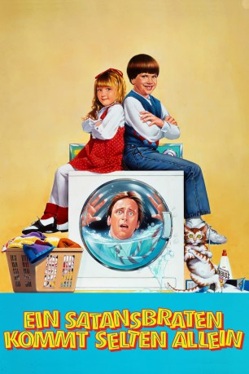

#11550 Ein Satansbraten kommt selten Allein
Alternativ: Problem Child 2 (Englischer Titel)
 
 IMDB-Wertung: 4.7 / 10
IMDB-Wertung: 4.7 / 10  Tomatometer: 7
Tomatometer: 7  Metascore: 0
Metascore: 0 
Junior, der per Adoption hinzugewonnene Sprössling des Ehepaares Healy, ist nicht gerade ein liebes Kind. Mit seinen bösartigen Streichen hat er nicht nur die Leute des Ortes gegen sich aufgebracht, sondern auch seine Mutter in die Flucht geschlagen. Vater Ben hofft, mit seinem “Satansbraten” in einer anderen Stadt neu anfangen zu können. In Mortville zeigt Junior jedoch, dass er nichts verlernt hat. Der Alptraum aller Eltern schlägt mit anarchistischer Zerstörungswut zu. Während sein Vater sich schon bald von heftig um seine Gunst buhlenden weiblichen Singles umzingelt sieht, macht Junior an der neuen Schule in Mortville die Bekanntschaft einer ihm ebenbürtigen Gegnerin – der kleinen Trixie. Sie ist die Tochter der sanften Schulkrankenschwester Annie und Junior an Boshaftigkeit weit überlegen. Nach anfänglichen Kämpfen verbrüdern sich die beiden, um künftige Stiefmütter von Junior gemeinsam in die Flucht zu schlagen...
Jahr: 1991
Dauer: 82 Minuten
FSK: 12
Land: USA Studio: Universal PicturesTonspuren:
Untertitel:
Auflösung: 1080p (1920x1080) Größe: 6553 MB
Genre: Komödie, Familie
Regisseur:  Brian Levant
Brian Levant
Drehbuch: Scott Alexander, Larry Karaszewski, Scott Alexander, Larry Karaszewski
Soundtrack: David Kitay
Darsteller:
 John Ritter als Ben Healy
John Ritter als Ben Healy- Michael Oliver als Junior Healy
 Jack Warden als 'Big' Ben Healy
Jack Warden als 'Big' Ben Healy Laraine Newman als Lawanda Dumore
Laraine Newman als Lawanda Dumore- Amy Yasbeck als Annie Young
- Ivyann Schwan als Trixie Young
 Gilbert Gottfried als Mr. Peabody
Gilbert Gottfried als Mr. Peabody- Paul Willson als Smith
 Alan Blumenfeld als Aron Burger
Alan Blumenfeld als Aron Burger- Charlene Tilton als Debbie Claukinski
 James Tolkan als Mr. Thorn
James Tolkan als Mr. Thorn Zach Grenier als Voytek
Zach Grenier als Voytek Eric Edwards als Murph
Eric Edwards als Murph- Tiffany Mataras als Madison
- Dennis Redfield als Animal Control Guy
- Denise Lecce als Bridal Shower Lady
 Nancy Duerr als Bridal Shower Lady
Nancy Duerr als Bridal Shower Lady Tom Nowicki als Health Official
Tom Nowicki als Health Official Ric Reitz als Health Official
Ric Reitz als Health Official Robert Small als Pathetic Defiant Man
Robert Small als Pathetic Defiant Man- Danny Gura als Freckled Boy on Ride
- Paul Sutera als Richard
- Jillian Amburgey als 'Hubba Hubba' Lady
 Brett Rice als Maitre D'
Brett Rice als Maitre D'- Aimee Deshayes als Precious Young Girl
- Elaine Klimaszewski als Hot Tub Girl
- Diane Klimaszewski als Hot Tub Girl
 June Foray als Puppet
June Foray als Puppet- Carrell Myers als Parent
 Tim Powell als Guy with Toupee
Tim Powell als Guy with Toupee- Bob Smith als Father Flanagan
- Crystal Hunt als (uncredited)
- Tim Rerucha als Waiter (uncredited)
- Martha Quinn als Emily
- Krystle Mataras als Dolly
- Bill Warren als Animal Control Guy
- Kristina Simonds als Rhoda
- Aaron Vaughn als Scuzzy Boyfriend
- Bill Cordell als Lab Technician
- Hillary Matthews als Upset Wife
- Carla Kneeland als Peabody's Date
- Tabetha Thomas als Polly
- Buddy Stoccardo als Crazy Dance D.J.
- Adam Brock als Neighbor Boy
- Christopher Oyen als Goofy Waiter
- Danny Hanemann als Scummy Ride Operator
- Shaun Padgett als Mother
- Tammy Boalo als 6th Grade Mother
- Danielle Meierhenry als 6th Grade Student
- Carol French als Horse Rider
Datei: X:\3-Trilogie(N-Z)\Satansbraten\Satansbraten kommt selten Allein, Ein (1991, FSK12, 1920x1080).mkv seit 24.07.2019
Festplatte: HD Collection-3(N-Z)-6(A-Z)
 Alle Filme aus Gruppe '3-Trilogie(N-Z)\Satansbraten'
Alle Filme aus Gruppe '3-Trilogie(N-Z)\Satansbraten'